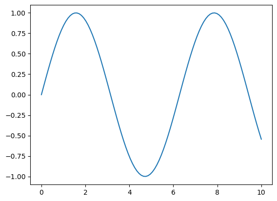

4 Enhancing Workflow in Jupyter Notebooks
4.1 Learning Objectives
In this lecture, we’ll explore how to optimize your workflow in Jupyter notebooks by leveraging magic commands and shell commands, understanding file paths, and interacting with the filesystem using the os module.
By completing this lecture, you will be able to:
- Run shell commands directly within a notebook.
- Navigate and manipulate files and directories efficiently.
- Integrate external tools and scripts seamlessly into your workflow.
By mastering these techniques, you’ll be able to work more efficiently and handle complex data science tasks with ease.
4.2 Magic Commands
4.2.1 What are Magic Commands?
Magic commands in Jupyter are shortcuts that extend the functionality of the notebook environment. There are two types of magic commands: - Line magics: Commands that operate on a single line. - Cell magics: Commands that operate on the entire cell.
In Jupyter notebooks, line magic commands are invoked by placing a single percentage sign (%) in front of the statement, allowing for quick, inline operations, while cell magic commands are denoted with double percentage signs (%%) at the beginning of the cell, enabling you to apply commands to the entire cell for more complex tasks.
You can access the full list of magic commands by typing:
%lsmagic
::: {.cell execution_count=1}
``` {.python .cell-code}
# show all the avaiable magic commands on the system
%lsmagicAvailable line magics:
%alias %alias_magic %autoawait %autocall %automagic %autosave %bookmark %cd %clear %cls %code_wrap %colors %conda %config %connect_info %copy %ddir %debug %dhist %dirs %doctest_mode %echo %ed %edit %env %gui %hist %history %killbgscripts %ldir %less %load %load_ext %loadpy %logoff %logon %logstart %logstate %logstop %ls %lsmagic %macro %magic %mamba %matplotlib %micromamba %mkdir %more %notebook %page %pastebin %pdb %pdef %pdoc %pfile %pinfo %pinfo2 %pip %popd %pprint %precision %prun %psearch %psource %pushd %pwd %pycat %pylab %qtconsole %quickref %recall %rehashx %reload_ext %ren %rep %rerun %reset %reset_selective %rmdir %run %save %sc %set_env %store %sx %system %tb %time %timeit %unalias %unload_ext %who %who_ls %whos %xdel %xmode
Available cell magics:
%%! %%HTML %%SVG %%bash %%capture %%cmd %%code_wrap %%debug %%file %%html %%javascript %%js %%latex %%markdown %%perl %%prun %%pypy %%python %%python2 %%python3 %%ruby %%script %%sh %%svg %%sx %%system %%time %%timeit %%writefile
Automagic is ON, % prefix IS NOT needed for line magics.:::
4.2.2 Line Magic Commands
4.2.2.1 %time: Timing the execution of code
In data science, it is often crucial to evaluate the performance of specific code snippets or algorithms, and the %time magic command provides a simple and efficient way to measure the execution time of individual statements, helping you identify bottlenecks and optimize your code for better performance.
Code
def my_dot(a, b):
"""
Compute the dot product of two vectors
Args:
a (ndarray (n,)): input vector
b (ndarray (n,)): input vector with same dimension as a
Returns:
x (scalar):
"""
x=0
for i in range(a.shape[0]):
x = x + a[i] * b[i]
return xCode
import numpy as np
np.random.seed(1)
a = np.random.rand(10000000) # very large arrays
b = np.random.rand(10000000)Let’s use %time to measure the execution time of a single line of code.
Code
# Example: Timing a list comprehension
%time np.dot(a, b)
# CPU times: total: 0 ns
Wall time: 4.78 ms2501072.5816813153Code
%time my_dot(a, b)CPU times: total: 1.88 s
Wall time: 1.86 s2501072.5816813707To capture the output of %time (or %timeit), you cannot directly assign it to a variable as it’s a magic command that prints the result to the notebook’s output. However, you can use Python’s built-in time module to manually time your code and assign the execution time to a variable.
Here’s how you can do it using the time module:
Code
import time
tic = time.time() # capture start time
c = np.dot(a, b)
toc = time.time() # capture end time
print(f"np.dot(a, b) = {c:.4f}")
print(f"Vectorized version duration: {1000*(toc-tic):.4f} ms ")
tic = time.time() # capture start time
c = my_dot(a,b)
toc = time.time() # capture end time
print(f"my_dot(a, b) = {c:.4f}")
print(f"loop version duration: {1000*(toc-tic):.4f} ms ")
del(a);del(b) #remove these big arrays from memorynp.dot(a, b) = 2501072.5817
Vectorized version duration: 0.0000 ms
my_dot(a, b) = 2501072.5817
loop version duration: 2228.7092 ms 4.2.2.2 %who and %whos: Listing variables
%who: Lists all variables in the current namespace.%whos: Lists variables along with their types, sizes, and values
Code
# Example: Checking variables in memory
a = 10
b = "data science"
%who
%whos A B C a b c current_dir file_path my_dot
np os plt sys tic time toc x y
Variable Type Data/Info
-----------------------------------
A ndarray 1000x1000: 1000000 elems, type `float64`, 8000000 bytes (7.62939453125 Mb)
B ndarray 1000x1000: 1000000 elems, type `float64`, 8000000 bytes (7.62939453125 Mb)
C ndarray 1000x1000: 1000000 elems, type `float64`, 8000000 bytes (7.62939453125 Mb)
a int 10
b str data science
c float64 2501072.5816813707
current_dir str c:\Users\lsi8012\OneDrive<...>iversity\FA24\303-1\Week2
file_path str C:Users\Username\Documents\data.csv
my_dot function <function my_dot at 0x00000267B1EFBCE0>
np module <module 'numpy' from 'c:\<...>ges\\numpy\\__init__.py'>
os module <module 'os' (frozen)>
plt module <module 'matplotlib.pyplo<...>\\matplotlib\\pyplot.py'>
sys module <module 'sys' (built-in)>
tic float 1727812577.7224722
time module <module 'time' (built-in)>
toc float 1727812579.9511814
x ndarray 100: 100 elems, type `float64`, 800 bytes
y ndarray 100: 100 elems, type `float64`, 800 bytesBoth %who and %whos will list all variables, including those defined in the notebook’s code cells. If you want to list only specific types of variables (like only lists or integers), you can use:
Code
%who int
%whos inta
Variable Type Data/Info
----------------------------
a int 10Code
%who str
%whos strb current_dir file_path
Variable Type Data/Info
-------------------------------
b str data science
current_dir str c:\Users\lsi8012\OneDrive<...>iversity\FA24\303-1\Week2
file_path str C:Users\Username\Documents\data.csv4.2.2.3 %matplotlib inline: Displaying plots inline
This command allows you to embed plots within the notebook.
Code
# Example: Using %matplotlib inline to display a plot
import matplotlib.pyplot as plt
import numpy as np
%matplotlib inline
x = np.linspace(0, 10, 100)
y = np.sin(x)
plt.plot(x, y);
4.2.3 Cell Magic Commands
A cell magic command in Jupyter notebook has to be the first line in the code cell
4.2.3.1 %%time: Timing cell execution
This cell magic is useful for measuring the execution time of an entire cell.
Code
%%time
# Example: Timing a cell with matrix multiplication
import numpy as np
A = np.random.rand(1000, 1000)
B = np.random.rand(1000, 1000)
C = np.dot(A, B)UsageError: Line magic function `%%time` not found.4.2.3.2 %%writefile: Writing content to a file
This command writes the contents of the cell to a file. Note that, it has to be the first line in the code cell
Code
%%writefile sample.txt
This is an example of writing content to a file using %%writefile magic command.Overwriting sample.txtQuestion: there are several timing magic commands that can be confusing due to their similarities, they are %time,%timeit, %%time, and %timeit. Do your own research on the differences among them
4.3 Shell Commands in Jupyter Notebooks
What are Shell Commands?
Shell commands allow you to interact with the underlying operating system. You can execute them directly within Jupyter by prefixing the command with an exclamation mark (!). In a Jupyter notebook, while the IPython kernel executes the Python code, it delegates the shell commands to the operating system’s shell. They are not executed by the same engine. The IPython kernel is for Python code, while the shell commands are handled by underlying operating system shell (e.g., Bash on macOS/Linux, or Command Prompt/PowerShell on Windows).
4.3.1 Using Shell Commands
4.3.1.1 !pwd(!cd in windows): Print working directory
You can check current working directory with the !pwd(!cd in windows) command.
Code
!cdc:\Users\lsi8012\OneDrive - Northwestern University\FA24\303-1\Week24.3.1.2 !ls(!dir in windows): Listing files and directories
List the contents of the current directory.
Code
!dir Volume in drive C is Windows
Volume Serial Number is A80C-7DEC
Directory of c:\Users\lsi8012\OneDrive - Northwestern University\FA24\303-1\Week2
10/01/2024 12:37 PM <DIR> .
10/01/2024 12:37 PM <DIR> ..
09/30/2024 04:49 PM 1,088,640 Environments.pptx
09/29/2024 02:19 PM 985,591 env_setup.html
09/29/2024 01:18 PM 5,289 Exercise1_Environment.ipynb
09/29/2024 03:23 PM <DIR> images
10/01/2024 12:44 PM 46,267 magic_shell_path_specification.ipynb
09/16/2024 02:25 PM 72,461 python-os-and-filesystem.ipynb
10/01/2024 12:38 PM 82 sample.txt
09/29/2024 03:20 PM 783,205 Setup_env.pdf
09/29/2024 02:19 PM 36,228 venv_setup.ipynb
8 File(s) 3,017,763 bytes
3 Dir(s) 153,680,662,528 bytes free4.3.1.3 !mkdir: Creating a new directory
You can create a new directory using the !mkdir command.
Code
!mkdir new_folder4.3.1.4 !cat(type in windows): Displaying file content
Use !cat(type in windows) to display the contents of a file.
Code
!type sample.txtThis is an example of writing content to a file using %%writefile magic command.4.4 Installing required packages within your notebook
When installing packages from within a Jupyter notebook, you have two main options: using a shell command or a magic command
!pip install package_name%pip install package_name
To ensure the installation occurs in the correct environment (i.e., the environment in which the notebook kernel is running), you can use the Python executable associated with the current notebook.
Code
import sys
!{sys.executable} -m pip install numpyRequirement already satisfied: numpy in c:\users\lsi8012\appdata\local\anaconda3\lib\site-packages (1.26.4)In contrast, magic Command (%pip) is Jupyter-specific and automatically ensures that packages are installed in the correct environment (the notebook’s environment).
Code
%pip install numpyRequirement already satisfied: numpy in c:\users\lsi8012\appdata\local\anaconda3\lib\site-packages (1.26.4)
Note: you may need to restart the kernel to use updated packages.In real cases, we don’t need to use % before pip install numpy because automagic is enabled by default in IPython kernels. This allows magic commands to be run without the % prefix, as long as there is no variable named pip in the current scope, which would take precedence over the magic command. Automagic allows some line magic commands to be run without the % prefix, but not all magic commands.
Code
pip install numpyRequirement already satisfied: numpy in c:\users\lsi8012\appdata\local\anaconda3\lib\site-packages (1.26.4)
Note: you may need to restart the kernel to use updated packages.4.5 Specifying Your File Path
Next, we will discuss how to specify file paths in Python for loading and saving data, with an emphasis on absolute and relative paths. File paths are crucial when working with files in Python, such as reading datasets and writing results to files. Let’s explore the difference between absolute paths and relative paths.
4.5.1 Absolute Path
An absolute path provides the complete location of a file or directory from the root directory of your file system. It is independent of the current working directory.
Example of an Absolute Path (Windows):
# Absolute path example (Windows)
file_path = r"C:\Users\Username\Documents\data.csv"
::: {.cell execution_count=25}
``` {.python .cell-code}
!conda env list# conda environments:
#
base * C:\Users\lsi8012\AppData\Local\anaconda3
c:\Users\lsi8012\Documents\Courses\STAT303-Fa24\stat303_conda\.conda
:::
The path associated with each conda env is absolute path.
4.5.2 Relative Path
A relative path specifies the file location in relation to the current working directory. It is shorter and more flexible since it doesn’t require the full path from the root.
To find the current working directory in Python, you can use either a magic command or a shell command, as shown below:
Code
# Magic command
%pwd'c:\\Users\\lsi8012\\OneDrive - Northwestern University\\FA24\\303-1\\Week2'Code
# Shell command
!cdc:\Users\lsi8012\OneDrive - Northwestern University\FA24\303-1\Week2Example of a Relative Path:
Code
# Example of relative path
file_path = "sample.txt" # Relative to the current directoryThe relative path sample.txt means that there is a file in the current working directory.
4.5.3 Methods to Specify file path in Windows
Windows uses backslashes (\) to separate directories in file paths. However, in Python, the backslash is an escape character, so you need to either: * Escape backslashes by using a double backslash (\\), or * Use raw strings by prefixing the path with r.
4.5.3.1 Method 1: Using escaped backslashes
Code
file_path = "C:\\Users\\Username\\Documents\\data.csv"4.5.3.2 Method 2: Using Raw Strings
Code
file_path = r"C:\Users\Username\Documents\data.csv"4.5.3.3 Method 3: Using forward slashes (/)
Code
file_path = "C:/Users/Username/Documents/data.csv"4.5.3.4 Method 4: Using os.path.join
Code
import os
file_path = os.path.join("C:", "Users", "Username", "Documents", "data.csv")This method works across different operating systems because os.path.join automatically uses the correct path separator (\ for Windows and /for Linux/Mac).
macOS does not have the same issue as Windows when specifying file paths because macOS (like Linux) uses forward slashes (/) as the path separator, which is consistent with Python’s expectations.
4.5.3.5 Best Practices for File Paths in Data Science
- Use relative paths when working in a project structure, as it allows the project to be portable.
- Use absolute paths when working with external or shared files that aren’t part of your project.
- Check the current working directory to ensure you are referencing files correctly.
- Avoid hardcoding file paths directly in the code to make your code reusable on different machines.
- Use the forward slash (
/) as a path separator oros.path.jointo specify file path if your code will work across different operating systems
4.6 Interacting with the OS and filesystem
In data science, you frequently work with data files (e.g., CSVs, Excel, JSON) stored in different directories. The os module allow you to interact with the OS and the filesystem. Let’s import it and try out some commonly used functions in this module.
Code
import osWe can get the location of the current working directory using the os.getcwd function.
Code
os.getcwd()'c:\\Users\\lsi8012\\OneDrive - Northwestern University\\FA24\\303-1\\Week2'The command os.chdir('..') in Python changes the current working directory to the parent directory of the current one.
Note that .. as the path notation for the parent directory is universally true across all major operating systems, including Windows, macOS, and Linux. It allows you to move one level up in the directory hierarchy, which is very useful when navigating directories programmatically, especially in scripts where directory traversal is needed.
Code
os.chdir('..')Code
os.getcwd()'c:\\Users\\lsi8012\\OneDrive - Northwestern University\\FA24\\303-1'os.chdir() is used to change the current working directory.
Code
os.chdir('./week2')./week2 is a relative path: * . refers to the current directory. * week2 is a folder inside the current directory.
Code
os.getcwd()'c:\\Users\\lsi8012\\OneDrive - Northwestern University\\FA24\\303-1\\week2'The os.listdir() function in Python returns a list of all files and directories in the specified path. If no path is provided, it returns the contents of the current working directory.
Code
os.listdir()['Environments.pptx',
'env_setup.html',
'Exercise1_Environment.ipynb',
'images',
'magic_shell_path_specification.ipynb',
'python-os-and-filesystem.ipynb',
'Setup_env.pdf',
'venv_setup.ipynb']Check whether a specific folder/file exist in the current working directory
Code
'data' in os.listdir('.')False4.7 Independent Study
To reinforce the skills learned in this lecture, complete the following tasks:
- Set Up Your Workspace
- Create a folder named
STAT303-1for putting the course materials. - Create a
pipenvironment for the upcoming coursework.
- Organize your files into separate directories for datasets, assignments, projects, quizzes, lectures, and exams.
- Use the
osmodule or shell commands to create these directories programmatically in your Jupyter notebook.
- Create a folder named
- Practice Magic Commands
- Use
%timeitto measure the execution time of a simple Python function in your notebook.
- Experiment with
%lsmagicto explore all available magic commands.
- Use
- Run Shell Commands
- Use
!ls(or!diron Windows) to list the contents of the directories you created.
- Use
!pwdto print the current working directory.
- Use
- Explore File Paths
- Write a Python script to navigate between directories using relative and absolute paths.
- Use the
osmodule to programmatically check the existence of a directory or file before creating it.
Code
# Navigate between directories and understand . and .. in paths
import os
# Print the current directory
print("Current Directory:", os.getcwd()) # Get the current working directory
# Use '.' to refer to the current directory
current_dir = os.path.abspath(".") # Absolute path of the current directory
print("Using '.': Current Directory Path:", current_dir)
# Use '..' to refer to the parent directory
parent_dir = os.path.abspath("..") # Absolute path of the parent directory
print("Using '..': Parent Directory Path:", parent_dir)
# Create a new folder in the current directory and navigate into it
os.mkdir("test_folder") # Create a new folder
print("Created 'test_folder' in:", os.path.abspath("."))
os.chdir("test_folder") # Change to the new folder
print("After Changing Directory (Relative to '.'): ", os.getcwd())
# Navigate back to the parent directory using '..'
os.chdir("..")
print("After Navigating Back to Parent Directory (Relative to '..'):", os.getcwd())
# Navigate to the parent directory directly using an absolute path
os.chdir(parent_dir)
print("Using Absolute Path to Navigate to Parent Directory:", os.getcwd())
Current Directory: c:\Users\lsi8012\Documents\Courses\FA24
Using '.': Current Directory Path: c:\Users\lsi8012\Documents\Courses\FA24
Using '..': Parent Directory Path: c:\Users\lsi8012\Documents\Courses
Created 'test_folder' in: c:\Users\lsi8012\Documents\Courses\FA24
After Changing Directory (Relative to '.'): c:\Users\lsi8012\Documents\Courses\FA24\test_folder
After Navigating Back to Parent Directory (Relative to '..'): c:\Users\lsi8012\Documents\Courses\FA24
Using Absolute Path to Navigate to Parent Directory: c:\Users\lsi8012\Documents\CoursesCode
# check the existence of a directory or file before creating it
# Define directory and file paths
dir_path = "example_directory"
file_path = os.path.join(dir_path, "example_file.txt")
# Check and create directory
if not os.path.exists(dir_path):
os.makedirs(dir_path)
print(f"Directory '{dir_path}' created.")
else:
print(f"Directory '{dir_path}' already exists.")
# Check and create file
if not os.path.exists(file_path):
with open(file_path, "w") as f:
f.write("This is a test file.") # Write some content to the file
print(f"File '{file_path}' created.")
else:
print(f"File '{file_path}' already exists.")Directory 'example_directory' created.
File 'example_directory\example_file.txt' created.By completing these exercises, you’ll gain practical experience with magic commands, shell commands, file paths, and the os module, enhancing your ability to interact with the filesystem in Jupyter notebooks effectively.